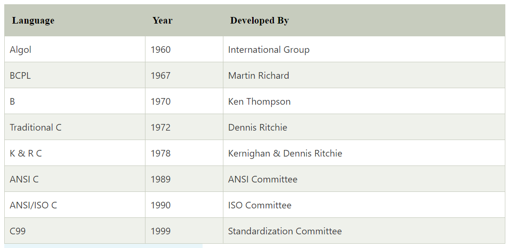

History of C Language
History of C language is interesting to know. Here we are going to discuss a brief history of the c language.
C programming language was developed in 1972 by Dennis Ritchie at bell laboratories of AT&T (American Telephone & Telegraph), located in the U.S.A.
Dennis Ritchie is known as the founder of the c language.
It was developed to overcome the problems of previous languages such as B, BCPL, etc.
Initially, C language was developed to be used in UNIX operating system. It inherits many features of
previous languages such as B and BCPL.
Let's see the programming languages that were developed before C language.
